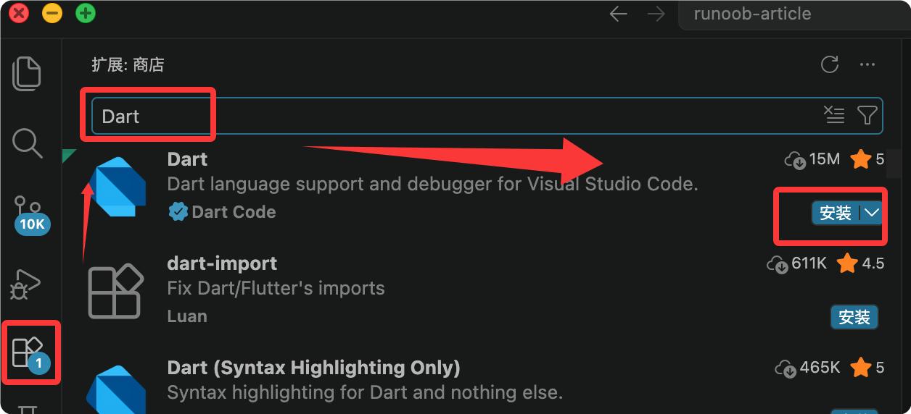

Dart 開発環境の構築
どのプログラミング言語を学ぶにしても、最初のステップはローカルに使える開発環境を構築することです。
この章では、Dart SDK のインストール、エディタの設定、そして最初の Dart プログラムの実行までを解説します。
オンラインで体験
単に Dart を手軽に試したいだけで、ローカルに何もインストールしたくない場合は、DartPadが最も手間のかからない選択肢です。
DartPad は Dart 公式が提供するオンラインエディタで、登録不要ですぐにブラウザでコードの作成と実行ができます。
アクセス先：https://dartpad.dev

DartPad の主な機能
- Dart コードをオンラインで作成・実行し、出力をリアルタイムで確認できる
- 複数のサンプルプログラムが内蔵されており、すぐに使い始めるのに適している
- コードリンクの共有に対応しており、コラボレーションや質問に便利
- Flutter コードのプレビューに対応（ブラウザで簡単な Flutter UI を実行できる）
Dart SDK のインストール
Dart SDK には、Dart プログラムのコンパイル、実行、デバッグに必要なすべてのツールが含まれています。
お使いのオペレーティングシステムに応じて、対応するインストール方法を選択してください。
macOS へのインストール
macOS をお使いの場合は、Homebrew でのインストールを推奨します：
$ brew tap dart-lang/dart $ brew install dart
インストール完了後、バージョンを確認します：
$ dart --version Dart SDK version: 3.5.0 (stable)
Windows へのインストール
Windows ユーザーは Chocolatey パッケージマネージャーでインストールできます：
C:\> choco install dart-sdk
または、直接dart.dev/get-dartインストールパッケージをダウンロードし、ダブルクリックしてインストールウィザードを実行します。
Linux へのインストール
Debian/Ubuntu システムでは apt でインストールできます：
$ sudo apt-get update $ sudo apt-get install apt-transport-https $ wget -qO- https://dl-ssl.google.com/linux/linux_signing_key.pub | sudo gpg --dearmor -o /usr/share/keyrings/dart.gpg $ echo 'deb [signed-by=/usr/share/keyrings/dart.gpg arch=amd64] https://storage.googleapis.com/download.dartlang.org/linux/debian stable main' | sudo tee /etc/apt/sources.list.d/dart_stable.list $ sudo apt-get update $ sudo apt-get install dart
インストールの確認
どの OS を使用していても、インストール完了後は以下のコマンドで SDK が正常に動作することを確認できます：
$ dart --version $ dart --help
バージョン番号とヘルプ情報が表示されれば、インストール成功です。
DartPad オンラインエディタの使用
今はソフトウェアをインストールしたくない場合、DartPad が最速で始める方法です。
DartPad は Google 公式が提供するオンライン Dart エディタで、登録不要ですぐに使えます。
アクセス先：https://dartpad.dev
DartPad の特徴：
| 特徴 | 説明 |
|---|---|
| 設定不要 | ブラウザを開くだけで Dart コードの作成と実行が可能 |
| Flutter 対応 | Flutter モードに切り替えて、UI 付きのサンプルを作成可能 |
| コード共有 | リンクを生成してコードスニペットを共有 |
| シンタックスハイライト | Dart のシンタックスハイライトとコード補完を内蔵 |
| バージョン選択可能 | 異なる Dart/Flutter バージョンを選択可能 |
DartPad は構文の簡単な検証やコードスニペットの共有に非常に適しています。ただし、本格的なプロジェクト開発には、ローカル IDE 環境の構築をおすすめします。
VS Code の設定
VS Code は現在最も人気のある Dart 開発エディタで、公式プラグインを組み合わせることで優れた開発体験が得られます。
インストール手順
まず、VS Code がインストールされていることを確認します（code.visualstudio.comからダウンロードできます）。
次に、VS Code を開いて拡張機能ストアを開きます（ショートカットキー：Cmd+Shift+X 或 Ctrl+Shift+X）。
3つ目に、以下を検索してインストールします：Dart拡張機能（発行者: Dart Code）。

Dart 拡張機能をインストールすると、Flutter SDK が検出された場合に Flutter 拡張機能も自動的にインストールされます。今後 Flutter を学習する予定がある場合は、Flutter 拡張機能も合わせてインストールすることをおすすめします。
設定の確認
インストール完了後、VS Code で新しいファイルを作成し、次の名前を付けます：hello.dart。
以下のコードを入力します。シンタックスハイライトとコードヒントが表示されれば、設定成功です。
サンプル
print('Hello, RUNOOB!');
}
コードの実行
VS Code で Dart コードを実行する方法は3つあります：
| 方法 | 操作 |
|---|---|
| 右クリックメニュー | 編集エリアで右クリック → Run Without Debugging |
| ショートカットキー | Ctrl+F5（Windows）またはCmd+F5（Mac） |
| ターミナルコマンド | ターミナルを開いて入力dart run hello.dart |
$ dart run hello.dart Hello, RUNOOB!
他の IDE の選択肢
| IDE | プラグイン名 | 適用シーン |
|---|---|---|
| IntelliJ IDEA | Dart プラグイン | Java/Kotlin 開発者に最適 |
| Android Studio | 組み込みサポート | Flutter モバイル開発 |
| VS Code | Dart 拡張機能 既に日本語のテキストです。中国語から日本語への翻訳は不要です。 | 汎用開発向け、軽量で高速 |
Dart プロジェクト構造の入門
単一ファイルでの実行に加えて、Dart は標準化されたプロジェクト構造にも対応しています。
dart create コマンドを使用すると、Dart プロジェクトの雛形をすばやく作成できます：
$ dart create my_first_app
生成されるディレクトリ構造は以下のとおりです：
my_first_app/ ├── bin/ │ └── my_first_app.dart # 程序入口文件 ├── lib/ │ └── my_first_app.dart # 库代码（可复用） ├── test/ │ └── my_first_app_test.dart # 测试文件 ├── pubspec.yaml # 项目配置文件（依赖管理） ├── analysis_options.yaml # 静态分析规则 └── README.md
各ディレクトリの用途は以下のとおりです：
| ディレクトリ/ファイル | 用途 |
|---|---|
| bin/ | 実行可能プログラムのエントリファイルを格納 |
| lib/ | 他のプロジェクトから参照可能なライブラリコードを格納 |
| test/ | ユニットテストファイルを格納 |
| pubspec.yaml | プロジェクトのメタデータと依存関係の宣言 |
| analysis_options.yaml | コードの静的解析ルールを設定 |
プロジェクトディレクトリに入り、プロジェクトを実行します：
$ cd my_first_app $ dart run
Hello world: my_first_app!
その他の拡張機能基本的な構文を学ぶ段階では、主に単一ファイルモードを使用します。自分で小さなプロジェクトを作り始めたら、dart create で標準的なプロジェクト構造を作成しましょう。
クリックしてノートを共有
<p style="font-size:14px;">ノートはこの記事の内容を拡張したものである必要があります！</p><br> <p style="font-size:12px;"><a href="../tougao.html" target="_blank">記事の投稿はこちらをクリック</a></p> <p style="font-size:14px;"><a href="../w3cnote/runoob-user-test-intro.html" target="_blank">登録招待コードの取得方法</a></p> <h3 class="text-muted"><i class="fa fa-info-circle" aria-hidden="true"></i> ノートを共有する前に<a href=";.html" class="runoob-pop">ログイン</a>が必要です！</h3> <p><a href="../w3cnote/runoob-user-test-intro.html" target="_blank">登録招待コードの取得方法</a></p>